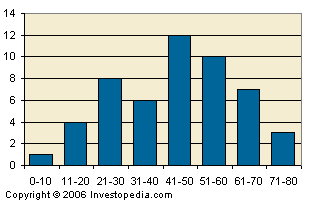

1. A graphical representation, similar to a bar chart in structure, that organizes a group of data points into user-specified ranges. The histogram condenses a data series into an easily interpreted visual by taking many data points and grouping them into logical ranges or bins.
2. The MACD histogram is a very common technical indicator that illustrates the difference between the MACD line and the trigger line. This difference is then plotted on a chart in the form of a histogram to make it easy for a trader to determine a specific asset's momentum. 1. Histograms are commonly used in statistics to demonstrate how many of a certain type of variable occurs within a specific range. For example, a census focused on the demography of a country may use a histogram of how many people there are between the ages of 0 and 10, 11 and 20, 21 and 30, 31 and 40, 41 and 50 etc. This histogram would look similar to the graph above.
2. MACD histograms are a popular tool used in technical analysis to gauge the strength of an asset's momentum. An increasing MACD histogram signals an increase in upward momentum while a decreasing histogram is used to signal downward momentum.
{kind=link}